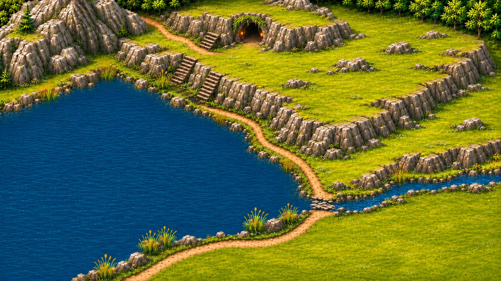

Välj ett habitat på kartan
Alla fyra områdena täcker tillsammans hela kartan och delar gränser utan mellanrum.
Det här är en granskningsvy. Parkmärken kan inte spenderas här och eleverna kommer inte hit från startkartan.Förhandsvyn använder den riktiga bilden assets/oster-steg-1.webp och gränserna i maps/oster-steg-1.json. Gränserna syns endast vid hovring eller tangentbordsfokus, som byggytorna på startkartan. Inga parkmärken dras och inga elevparker ändras.